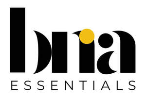

Trade Mark Journal No.2026/012 20 March 2026
UK00004341133 15 February 2026 (21)

- Class 21
- Household utensils; Household containers; Trays [household]; Household gloves; Squeegees [for household use]; Household or kitchen containers; Household or kitchen utensils; Dishes [household utensils]; Graters [household utensils]; Utensils for household purposes; Brushes for household purposes; Sponges for household purposes; Baskets for household purposes; Containers for household use; Strainers for household use; Buckets for household use; Containers for household or kitchen use; Squeegees for household purposes; Jars for household use; Sifters [household utensils]; Graters for household purposes; Graters for household use; Loofahs for household purposes; Colanders for household purposes; Ceramics for household purposes; Colanders for household use; Sieves [household utensils]; Cages for household pets; Laundry balls for use as household utensils; Laundry bins for household purposes; Non-electric food blenders [for household purposes]; Trays for household purposes; Brushes for household use; Gloves for household purposes; Graters [non-electric household utensils]; Strainers for household purposes; Droppers for household purposes; Blenders, non-electric, for household purposes; Atomisers for household use; Bins for household refuse; Household gloves for cleaning purposes; Scrapers for household purposes; Laundry baskets for household purposes; Laundry sorters for household purposes; Sieves [for household purposes]; Sieves for household purposes; Household containers for storing pet food; Laundry sorters for household use; Non-electric food mixers [for household purposes]; Disposable lids for household containers; All-purpose portable household containers.
BNA Essentials Ltd